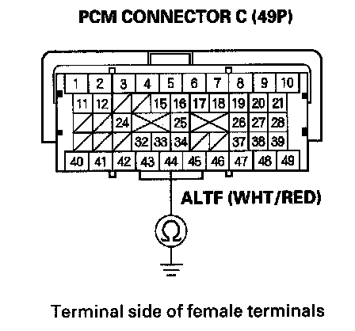

Alternator FR Signal Circuit
Alternator FR Signal Circuit Troubleshooting1. Start the engine, and let it idle.
2. Monitor the ALTERNATOR in the DATA LIST with the HDS.
3. Check if the indicated percentage varies when the headlight switch is turned on.
Does the percentage vary?
YES - The alternator signal circuit is OK.
NO - Go to step 4.
4. Turn the headlight switch and ignition switch OFF.
5. Jump the SCS line with the HDS.
6. Disconnect the alternator 4P connector.
7. Disconnect PCM connector C(49P).

8. Check for continuity between body ground and PCM connector terminal C44.
Is there continuity?
YES - Repair short in the wire between the PCM (C44) and the alternator.
NO - Update the PCM if it does not have the latest software, or substitute a known-good PCM, then recheck. If the symptom/indication goes away with a known-good PCM, replace the original PCM.